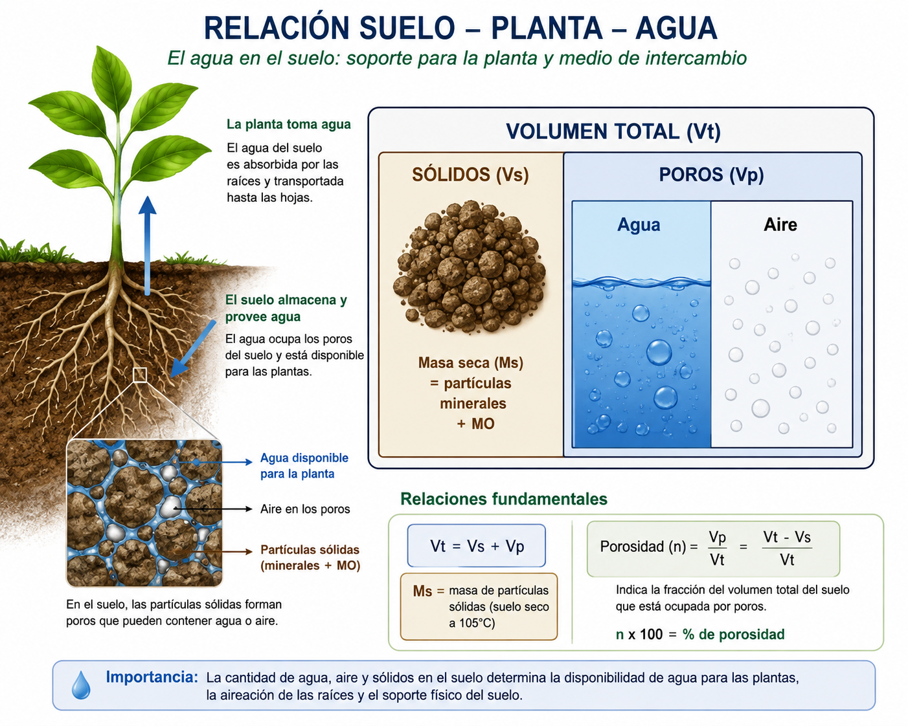

Sesión 2.2: Relaciones masa-volumen de suelo
Sesión 2.1 — Ideas fuerza:
- Textura + estructura + MO determinan la capacidad de retención de agua
- Ψm mide la succión con que el suelo retiene el agua
- La curva característica θ(Ψm) es la huella digital hídrica
Hoy: Pasamos de lo cualitativo a lo cuantitativo: ¿cómo medimos la densidad y porosidad del suelo?
| Unidad | 2 — El agua en el suelo |
| Sesión | 2.2 |
| RAA | RAA3 |
| Duración | ~90 minutos |
| Contenido | Densidad aparente, densidad real, porosidad total, relaciones masa-volumen |
Al finalizar esta sesión, serás capaz de:
Para calcular cuánta agua hay en el suelo necesitamos tres números:
| Variable | ¿Qué mide? | ¿Por qué la necesito? |
|---|---|---|
| Da | Masa seca / Volumen total | Convierte masa de suelo a volumen |
| Dr | Masa seca / Volumen de sólidos | Permite calcular espacio poroso |
| Porosidad | % del volumen que son poros | Límite máximo de agua que cabe |
\(\theta_v = \theta_g \times \frac{D_a}{\rho_{agua}}\) — Sin Da no hay conversión posible

Definición: Masa de suelo seco (105°C) por unidad de volumen total (incluyendo poros).
\[D_a = \frac{M_s}{V_t} \quad [\text{g/cm}^3 \text{ o Mg/m}^3]\]
¿Qué mide realmente Da? - No mide la densidad de las partículas
- Mide cuán “empacado” está el suelo
- Da alta = partículas más juntas = menos poros = más compactado
- Da baja = más espacio poroso = menos compactado
Procedimiento paso a paso: Video
Insertar cilindro metálico de volumen conocido (típicamente 100 cm³) en el suelo sin disturbar. Usar un martillo y un bloque de madera para inserción pareja.
Extraer cuidadosamente con pala o cuchillo, evitando vibraciones que compacten o expandan la muestra.
Enrasar ambos extremos del cilindro con cuchillo o espátula (quitar exceso, NO compactar).
Transferir todo el suelo del cilindro a una bolsa o recipiente. Pesar inmediatamente (masa húmeda).
Secar en estufa a 105°C durante 24 horas.
Pesar la muestra seca (Ms). Calcular: \(D_a = M_s / V_{cilindro}\)
| Error | Efecto en Da | Cómo evitarlo |
|---|---|---|
| Compactar al insertar el cilindro | Sobreestima Da | Insertar suavemente, sin golpes fuertes |
| Dejar piedras o gravas en la muestra | Sobreestima (Dr de grava > suelo) | Tamizar o usar método del terrón |
| Perder material al extraer | Subestima Da (menos Ms) | Extraer con cuidado, usar bolsa |
| No secar completamente | Subestima Da (Ms incluye agua) | 105°C × 24h mínimo; verificar peso constante |
| Suelo muy húmedo al muestrear | Se expande → subestima Da | Muestrear a humedad de campo, no después de lluvia |
| Da (g/cm³) | Tipo de suelo | Interpretación agronómica |
|---|---|---|
| 0.2 - 0.6 | Turbas, suelo muy orgánico | Excelente porosidad, baja capacidad de soporte |
| 0.7 - 1.0 | Arcilloso bien estructurado | Alta porosidad, buen desarrollo radical |
| 1.0 - 1.3 | Franco-arcilloso, arcilloso | Buen balance para cultivos |
| 1.3 - 1.5 | Franco, franco-arenoso | Ideal para la mayoría de cultivos |
| 1.5 - 1.7 | Franco-arenoso, arenoso | Aceptable; monitorear compactación |
| 1.7 - 1.9 | Compactado (cualquier textura) | Restricción moderada al crecimiento radical |
| > 1.9 | Severamente compactado | Restricción severa — requiere subsolado |
Regla práctica: Da > 1.6 g/cm³ en suelos francos ya restringe raíces.
| Cultivo | Da crítica (g/cm³) | Consecuencia |
|---|---|---|
| Hortalizas, papa | 1.5 - 1.6 | Tubérculos deformes, menor calibre |
| Maíz, trigo | 1.6 - 1.7 | Menor profundidad radical, menos agua disponible |
| Frutales | 1.7 - 1.8 | Raíces superficiales, vuelco |
| Praderas | > 1.7 | Menor densidad de raíces, menor infiltración |
La Da crítica depende de la textura: en arcillosos es menor (~1.5) que en arenosos (~1.8).
Un cilindro de 100 cm³ de suelo seco pesa 145 g.
Resuelve en 4 minutos.
Definición: Masa de suelo seco por unidad de volumen de partículas sólidas (sin poros).
\[D_r = \frac{M_s}{V_s} \quad [\text{g/cm}^3]\]
Valores típicos según composición mineral:
| Mineral | Dr (g/cm³) | Abundancia en suelos chilenos |
|---|---|---|
| Cuarzo (SiO₂) | 2.65 | Muy abundante (fracción arena y limo) |
| Feldespatos | 2.55 - 2.75 | Abundantes |
| Caolinita (arcilla 1:1) | 2.60 - 2.65 | Común en suelos de la zona central |
| Montmorillonita (arcilla 2:1) | 2.2 - 2.7 | Suelos volcánicos (sur de Chile) |
| Materia orgánica | 1.3 - 1.5 | Variable |
| Calcita (CaCO₃) | 2.71 | Suelos calcáreos (norte) |
Para la mayoría de suelos minerales chilenos: Dr ≈ 2.65 g/cm³
Procedimiento:
Cálculo:
\[D_r = \frac{M_s \times \rho_{agua}}{M_s - (P_{vacio+suelo+agua} - P_{vacio+agua})}\]
En la práctica del curso: asumimos Dr = 2.65 g/cm³ (suelo mineral típico).
Resuelve en 3 minutos.
Definición: Fracción del volumen total del suelo ocupada por espacios vacíos (poros).
Fórmula fundamental: \[P = \frac{V_p}{V_t} = \frac{V_t - V_s}{V_t} = 1 - \frac{V_s}{V_t}\]
En función de densidades (lo que usamos en la práctica): \[P = 1 - \frac{D_a}{D_r}\] \[P(\%) = \left(1 - \frac{D_a}{D_r}\right) \times 100\]
Interpretación:
- P = 30% → suelo compactado, pocos poros
- P = 50% → suelo agrícola en buenas condiciones
- P = 65% → suelo muy poroso (orgánico o arcilloso muy estructurado)
Datos de campo:
- Cilindro metálico: diámetro = 5.0 cm, altura = 5.1 cm
- Masa de suelo húmedo extraído: 185.0 g
- Masa después de secado (105°C, 24h): 157.0 g
- Dr asumida: 2.65 g/cm³
Paso 1 — Volumen del cilindro: \(V_t = \pi \times (2.5)^2 \times 5.1 = 100.1 \text{ cm}^3\)
Paso 2 — Densidad aparente: \(D_a = 157.0 / 100.1 = 1.57 \text{ g/cm}^3\)
Paso 3 — Porosidad: \(P = (1 - 1.57 / 2.65) \times 100 = 40.8\%\)
Interpretación: Suelo arenoso-franco, Da media-alta. Posible compactación incipiente.
| Da (g/cm³) | P (%) con Dr=2.65 | Interpretación |
|---|---|---|
| 0.80 | 69.8 | Muy poroso (orgánico) |
| 1.00 | 62.3 | Muy poroso (arcilloso bien estructurado) |
| 1.20 | 54.7 | Buen suelo agrícola |
| 1.35 | 49.1 | Ideal para mayoría de cultivos |
| 1.50 | 43.4 | Aceptable, monitorear |
| 1.65 | 37.7 | Compactación moderada — actuar |
| 1.80 | 32.1 | Compactación severa — subsolar |
Cada 0.1 g/cm³ de aumento en Da ≈ 3.8% de pérdida de porosidad.
Datos del ejemplo anterior:
- Da = 1.57 g/cm³, P = 40.8%
- Si el suelo está a CC (θv ≈ 55% de P en suelo arenoso-franco):
\[\theta_{v,CC} \approx 0.408 \times 0.55 = 0.224 \text{ cm}^3/\text{cm}^3\]
Lámina de agua a CC en 1 metro de profundidad:
\[L_{CC} = 0.224 \times 1000 \text{ mm} = 224 \text{ mm}\]
De esos 224 mm, solo ~120 mm son agua disponible (ADT). El resto es agua gravitacional o no disponible.
| Suelo | Da (g/cm³) | Dr (g/cm³) | P (%) | ¿Compactado? | Calidad física |
|---|---|---|---|---|---|
| Arenoso suelto | 1.55 | 2.65 | 41.5 | No | Buena |
| Franco agrícola | 1.35 | 2.65 | 49.1 | No | Muy buena |
| Franco compactado | 1.70 | 2.65 | 35.8 | Sí | Mala |
| Arcilloso estructurado | 1.10 | 2.65 | 58.5 | No | Excelente |
| Orgánico (pradera) | 0.60 | 1.80 | 66.7 | No | Excelente |
| Franco con piedemonte | 1.60 | 2.68 | 40.3 | Moderada | Regular |
Un cilindro de 100 cm³ extrae una muestra de suelo franco. Después de secar a 105°C por 24h, la masa seca es de 142 g. Asuma Dr = 2.65 g/cm³.
Calcule:
1. Densidad aparente (Da)
2. Volumen de sólidos (Vs)
3. Volumen de poros (Vp)
4. Porosidad total (P) en %
5. ¿El suelo está compactado? Justifique.
Resuelva en 5 minutos. Revise con su compañero.
Se muestrearon 3 sectores de un mismo predio frutal:
| Sector | Da (g/cm³) | Dr (g/cm³) | P (%) |
|---|---|---|---|
| Entre hileras (tráfico) | 1.72 | 2.65 | ? |
| Bajo la hilera (goteo) | 1.28 | 2.65 | ? |
| Cabecera (sin tráfico) | 1.38 | 2.65 | ? |
Calcule: 1. Porosidad de cada sector 2. ¿Qué sector tiene problemas de compactación? 3. ¿Qué recomendaría al agricultor?
En un mismo predio, Da puede variar significativamente:
| Zona del predio | Da típica (g/cm³) | Causa |
|---|---|---|
| Bajo hilera de cultivo | 1.20 - 1.35 | Sin tráfico, acumulación de MO |
| Entre hileras | 1.40 - 1.60 | Tráfico ocasional |
| Huella de tractor | 1.65 - 1.85 | Compactación severa por paso repetido |
| Cabecera del campo | 1.55 - 1.75 | Giro de maquinaria concentra tráfico |
Implicancia para el riego: Distinta Da → distinta porosidad → distinta infiltración. El agua no se infiltra uniformemente.
| Práctica de manejo | Efecto en Da | Tiempo de respuesta |
|---|---|---|
| Labranza convencional (arado) | ↓ Da temporal (afloja), luego ↑ (asentamiento) | Inmediato → 2-3 años |
| Cero labranza + cobertura | ↓ Da gradual (mejora estructura) | 3-7 años |
| Incorporación de compost (20 ton/ha) | ↓ Da 0.05-0.15 g/cm³ | 1-3 años |
| Subsolado | ↓ Da 0.2-0.4 g/cm³ inmediato | Inmediato → 2-4 años |
| Tráfico controlado (mismas huellas) | ↑ Da solo en huellas, ↓ en resto | 2-5 años |
Datos:
- Muestra de suelo: V_cilindro = 98 cm³, M_húmedo = 172 g, M_seco = 148 g
- Dr = 2.65 g/cm³
Calcule:
1. Da
2. Porosidad total
3. Contenido gravimétrico de agua (θg)
4. Contenido volumétrico de agua (θv)
5. Si este suelo está a CC (Ψm = -33 kPa) y θv_actual es la calculada, ¿está bien regado o necesita riego?
Da = Masa seca / Volumen total (g/cm³) — indicador de compactación
Dr = Masa seca / Volumen de sólidos — ≈ 2.65 g/cm³ en suelos minerales chilenos
Porosidad P = (1 − Da/Dr) × 100 — % del volumen disponible para agua y aire
Da > 1.6 en francos → compactación moderada; Da > 1.8 → severa
Cada 0.1 g/cm³ de aumento en Da ≈ 3.8% de pérdida de porosidad
Necesitamos Da para convertir θg → θv (próxima sesión)
La Da es modificable por manejo: reducir tráfico, aumentar MO, subsolar
Sesión 2.3: Contenido de humedad del suelo y parámetros hídricos
→ θg, θv, Saturación, Capacidad de Campo, Punto de Marchitez Permanente.
→ Ya tenemos Da y P. Ahora calculamos cuánta agua hay realmente.
¿Cuál es la diferencia entre Da y Dr? ¿Por qué Da siempre es menor que Dr?
Un suelo tiene Da = 1.5 g/cm³ y Dr = 2.65 g/cm³. Calcule P. ¿Qué volumen de agua (mm) cabe en los poros de 1 m de profundidad a saturación?
¿Por qué un suelo arcilloso tiene menor Da que uno arenoso?
¿Cómo cambia Da cuando un suelo se compacta? ¿Y la porosidad? Dé valores numéricos.
Describa el método del cilindro para determinar Da. Mencione 3 fuentes de error.
¿Por qué necesitamos Da para calcular θv a partir de θg?
Un agricultor nota que sus raíces no pasan de 40 cm. Mide Da = 1.75 g/cm³ a 40-50 cm. ¿Qué problema identifica y qué solución propone?
TAG2027 — Relación Suelo Agua Planta | UDLA